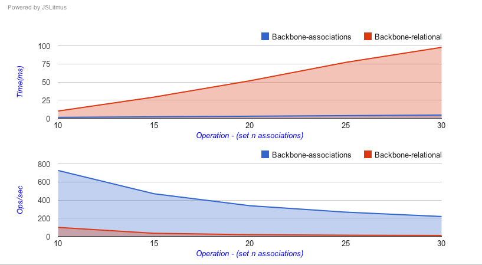

Try out our recently released Firebug extension -
Backbone Eye : Understand Backbone application behavior without debugging JavaScript!
The test consists of performing batches of n inserts. The #s below compares the performance (time and
operations/sec) of the two implementations. (backbone-associations v0.5.0 v/s backbone-relational v0.8.5)

Run these tests on your machine configuration instantly
here
Want to write your own test? Click
here